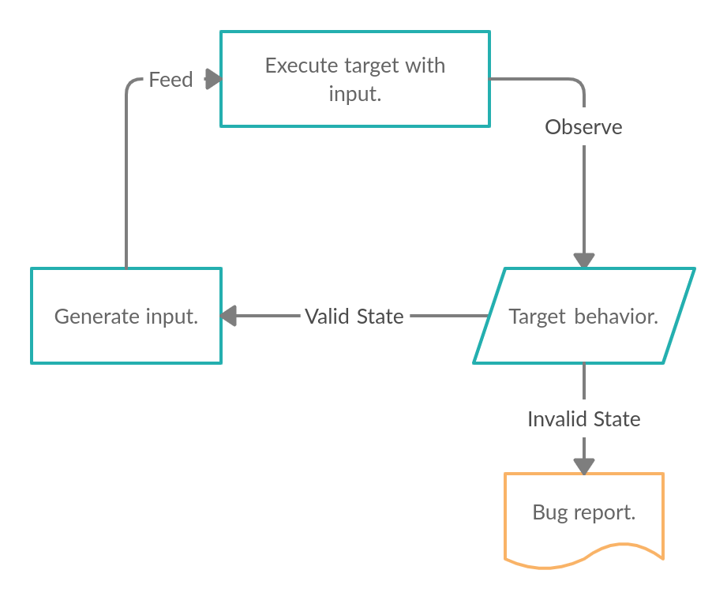

2 minutes
Introduction
Fuzzing, or Fuzz Testing, is an automated software testing technique where a target application is placed in an execution environment. An input generation technique is employed to create unique and varying inputs(test cases) for the target. These new inputs are continuously sent to the target and the resultant behavior is observed.
NOTE: the phrases “test cases” and “inputs” can be used interchangeably.
 Fuzzing cycle.
Either the program will be able to handle the provided input just fine, or it will enter an invalid state of execution(mostly a crash) and you’ll have a bug report on your hand. It’s a continuous, cyclic process.
Advantages
- Faster than manual source code review.
- Computing resources are cheaper than a human.
- Can reveal bugs missed in audit.
- Could be run endlessly with the development cycle itself.
- Scalable and easy to manage.
Disadvantages
- No guarantee for bugs.
- Chance of finding a bug decreases with the depth of the path of execution.
- Writing harnesses and preparing the environment of execution for the target can be complicated.
The aim of fuzzing is to test the program under obscure and extreme cases. You should never replace unit, integration and system tests with fuzzing since the target still needs to be tested for cases with normal input. Instead, supplement the tests with fuzzing for the best results.
Fuzzing can be resource intensive, while the resources might be constrained. In such cases, you need to find a balance between generating new test cases, executing the program, target constraints, performing sanitation and finding bugs. It’s an optimization problem. The picture and the decision making gets clearer with the understanding of different forms of fuzzing and their uses case.
The target could be a binary, a kernel or even a protocol. The concept is versatile and adaptable to all scenarios, as long as it accepts an input.
Bugs
Generally, the types of bugs discovered by a fuzzing process are as follows:
- Memory management issues.
- Assertion violations.
- Incorrect null handling.
- Faulty exception handling.
- Deadlock states.
- Infinite loops.
- Undefined behaviors.
- Incorrect resource management.
Some issues like deadlocks and assertion violations can be easily verified since the result of the bug is instantly visible, while some bugs like incorrect memory management may not be as prominent since they might not result in an invalidated state.